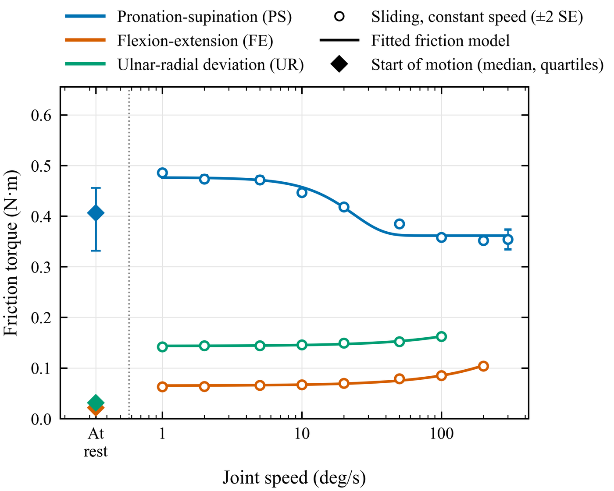
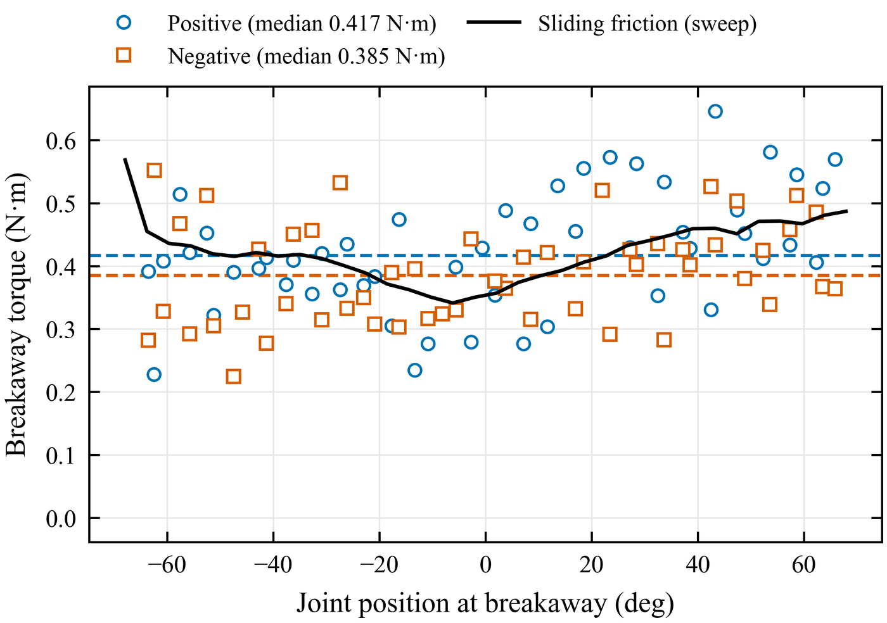
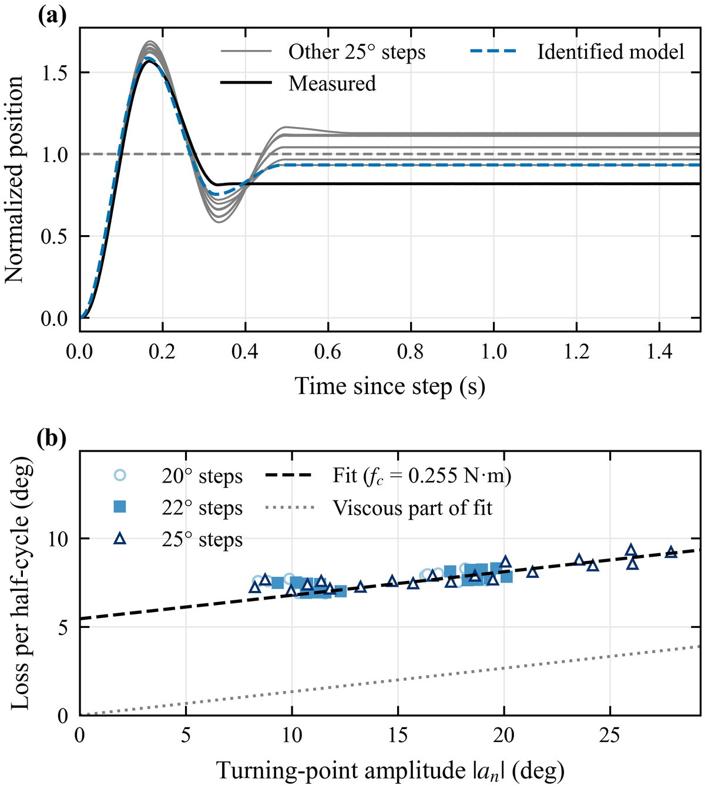
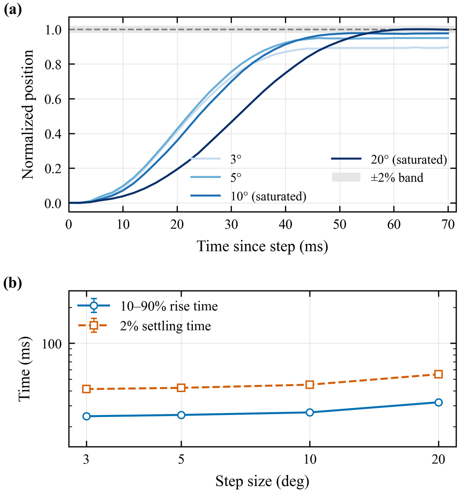
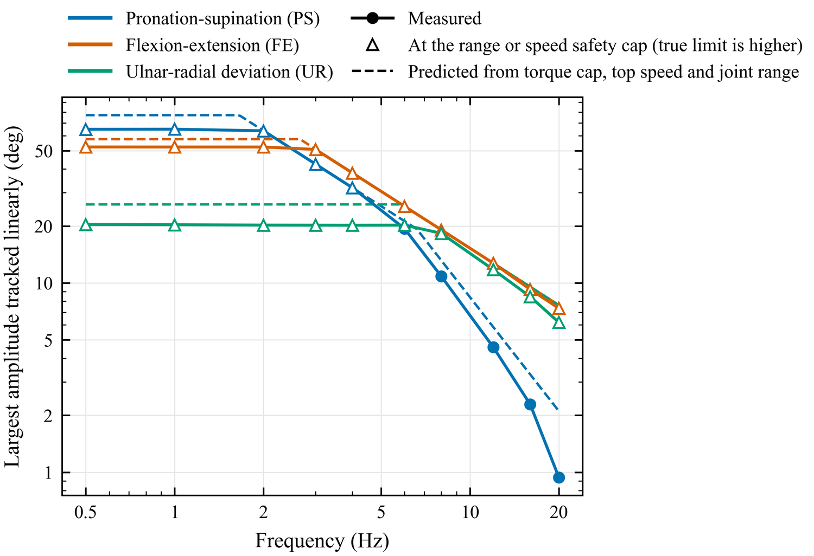
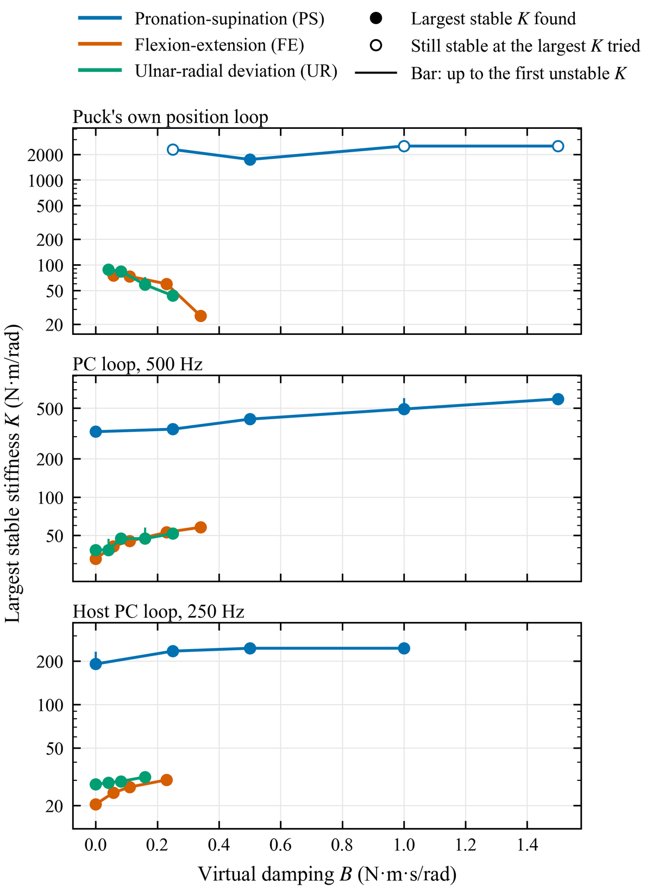
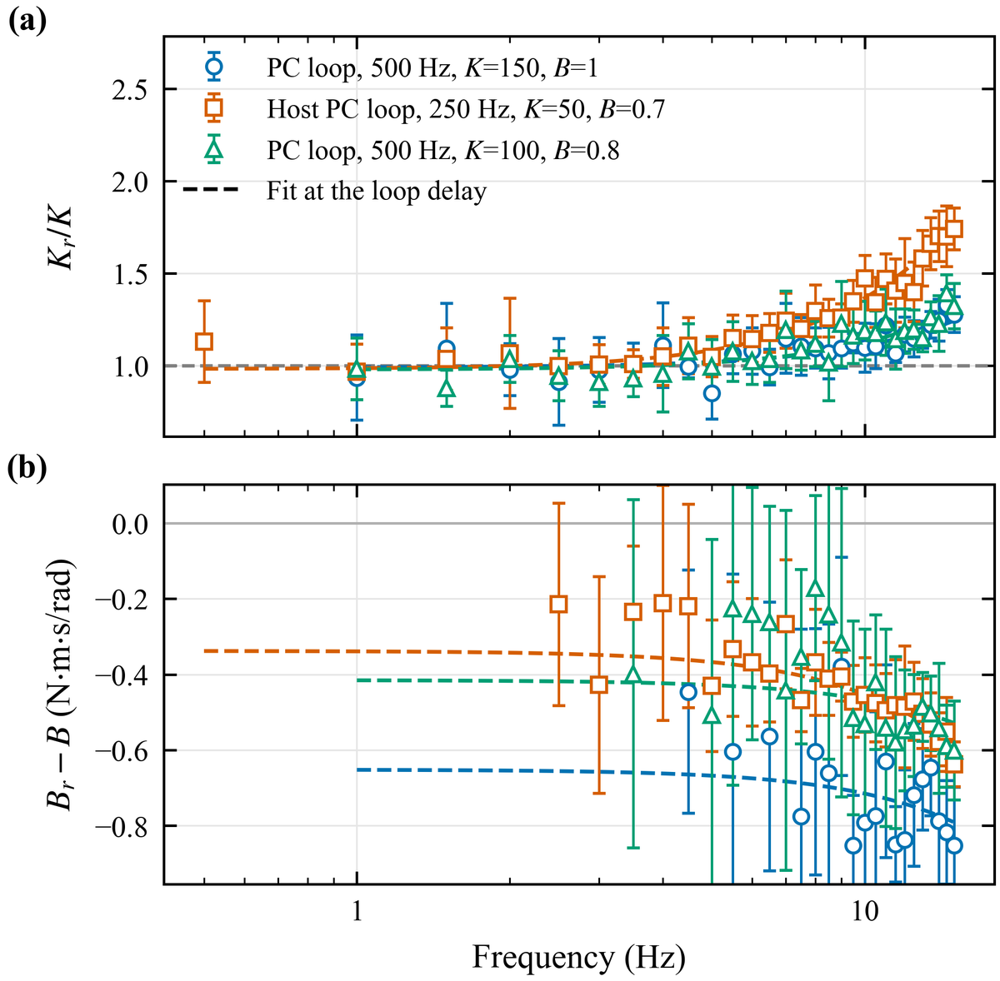
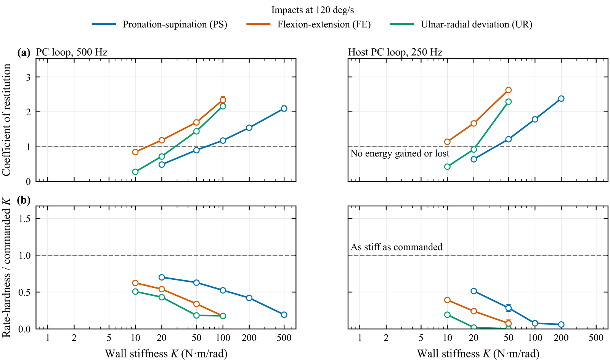

A test suite for the haptic wrist
These are the bench experiments I wrote to measure the final wrist, the one built at Barrett on their P4 pucks. I also ran them on the WHAM wrist, an earlier moteus-driven prototype, and the two are compared near the end. Each experiment has an analysis script that makes its figures and a summary, and each one can dry-run against a simulated wrist first: the real control library talks to emulated pucks on a virtual CAN bus.
The suite runs on a small real-time C++ CANopen library I wrote for the wrist: a 500 Hz SYNC loop with PD and feedforward rendering through the differential, zeroing, and its own safety checks, since the bench setup has no safety board. Inertia, damping and friction are identified from the drives’ measured current, integrated through the equation of motion, so they don’t depend on a model of the controller. Every run also logs its loop timing and measures its command-to-torque delay at start-up. On the final wrist that delay was 3 to 5 ms.
Each joint was tested with its axis vertical, so gravity puts no torque on it, while the other two joints were held in place. The results below come from runs on October 15 to 18 for the final wrist and October 15 and 19 for the WHAM.
| Final wrist | PS | FE | UR |
|---|---|---|---|
| Range of motion | 171.8° | 131.4° | 69.2° |
| Inertia at the joint (kg·cm²) | 138.0 | 31.5 | 22.5 |
| Sliding friction (mN·m) | 361 | 65 | 143 |
| Viscous damping (mN·m·s/rad) | < 7.6 | 11.4 | 10.9 |
| Torque to start moving (mN·m) | 406 | 21 (creeps) | 31 (creeps) |
| Position bandwidth, −3 dB | 33.2 Hz | 37.7 Hz | 40.4 Hz |
| Rise time, small step | 24.5 ms | 24.1 ms | 46.0 ms |
| Peak speed in steps | 608 °/s | 847 °/s | 372 °/s |
| ±10° tracked linearly up to | 8.3 Hz | ≥ 14.9 Hz | ≥ 13.8 Hz |
| Stiffest stable spring, no damping, 500 Hz loop (N·m/rad) | 327 | 33 | 38 |
| Same, 250 Hz host loop | 191 | 20 | 28 |
| Same, puck’s own loop, lightest damping | ≥ 2290 | 75 | 88 |
| Stiffest passive wall at 120 °/s, 500 Hz loop (N·m/rad) | 50 | 10 | 20 |
| Same, 250 Hz host loop | 20 | below 10 | 20 |
| Effective rendering delay, 500 Hz loop | 4.36 ms | 3.13 ms | 3.73 ms |
PS, FE and UR are pronation–supination, flexion–extension and ulnar–radial deviation. A ≥ means the test stopped at its own safety cap before it found the limit. The sections below explain each row.
Range of motion
With the drives off, I moved the handle by hand into every stop for 77 s while the loop logged at 500 Hz. PS turns from −85.2° to +86.6°, a span of 171.8°. FE spans 131.4°, and UR goes from −36.8° to +32.5°, or 69.2°. FE and UR share the cable differential, so their stops interact: FE’s upper stop drops 0.99° for every degree UR moves off center.
Friction
A stiff PD loop with velocity feedforward drives the joint through constant-speed passes in both directions, from 1 °/s up to 300 °/s on PS, 200 on FE and 100 on UR. At constant speed there’s no inertial torque, so at each position half the difference between the forward and backward torque is friction. Cogging is fitted first from the slowest passes, for each motor against its own angle, and subtracted. The analysis then fits
\[ \tau_f(v) = \operatorname{sgn}(v)\left[f_c + (f_s - f_c)\,e^{-(|v|/v_s)^2}\right] + b\,v \]and keeps the Stribeck term (the \(f_s\) bump at low speed) only if it lowers the BIC and the bump is more than twice its standard error. PS needed it. Its friction falls from 476 mN·m at low speed to a Coulomb level \(f_c\) of 361 mN·m, with \(v_s = 23.5\) °/s and no viscous term I could measure (under 7.6 mN·m·s/rad). It also changes with position: at its worst spot PS slides at 1.29 times its median friction. FE and UR fit Coulomb plus viscous, with \(f_c\) of 65.0 and 143.3 mN·m and \(b\) of 11.4 and 10.9 mN·m·s/rad. PS’s Coulomb friction is 12% of the loop’s 3 N·m torque cap.

For the torque to start moving, a soft spring ramps the joint from rest at stations every 5° across its range, in both directions and at two phases of the motor cogging. Each ramp starts with no torque in the spring, since one long staircase leaves the spring wound up between steps. Breakaway is detected from displacement with an onset fit, because velocity at these speeds is mostly encoder noise. PS breaks away at a median of 406 mN·m over 104 breakaways (417 going positive, 385 going negative), with a standard deviation of 81 mN·m from ramp to ramp. FE and UR never break away cleanly. They creep, and under the slowly rising spring they slip three encoder counts at 21 and 31 mN·m, far below the friction they show once they’re sliding.

Inertia and damping
A soft spring (5 N·m/rad, with 0.04 N·m·s/rad of damping) and steps of three sizes, eight of each, set the joint ringing. Between two turning points the joint moves in one direction, so over each half-cycle the drives’ measured torque fits
\[ J\ddot\theta + b\dot\theta + f_c\operatorname{sgn}(\dot\theta) + \tau_0 = \tau_{\text{meas}} \]integrated twice from the start of the half-cycle, by least squares over every half-cycle at once. Positions are never differentiated, and the fit needs no model of the loop. A ring-down fit of the turning points, corrected for the measured loop delay, is the cross-check.
PS comes out at \(J = 138.0\) kg·cm² (95% interval 137.4 to 138.6), \(b = 6.2\) mN·m·s/rad and \(f_c = 259\) mN·m. FE gives 31.5 kg·cm², 2.3 and 58.2, and UR 22.5 kg·cm², 5.3 and 121.6. Two other experiments measure inertia without this model, and they land close: the bandwidth test, from measured torque over position, gives 143.9, 33.0 and 23.1 kg·cm², and the free-space impedance spectrum gives 146.2, 31.8 and 22.0. Friction agrees less well. On PS the step test’s Coulomb term is 259 mN·m, well under the sweep’s 361.

Position bandwidth
The 500 Hz loop’s PD controller, with velocity feedforward, tracks one sinusoid at a time at 26 frequencies from 0.5 to 100 Hz, commanded at 5° and 10°. Each frequency gets the whole torque budget, and where the delayed loop’s predicted torque or speed would pass its limit the amplitude is cut back. The gains are low, \(K_p = 40\) N·m/rad and \(K_d = 1.5\) N·m·s/rad on PS, because the 3 to 4 ms loop delay limits them. FE and UR use the same gains scaled by their inertia relative to PS, which keeps the same loop dynamics. Gain and phase come from sinusoid fits to the command and the measured position, and the analysis also fits the delayed-loop model
\[ H(s) = \frac{e^{-s\tau}\left(K_p + K_d\,s\right)}{J s^2 + b\,s + e^{-s\tau}\left(K_p + K_d\,D(s)\right)} \] \[ D(s) = \frac{s\,e^{-sT/2}}{1 + s/\omega_f} \]where \(\tau\) is the measured loop delay, \(T\) the loop period and \(\omega_f\) the velocity filter. The \(K_d s\) in the numerator is the velocity feedforward, and \(D(s)\) is the velocity estimate from differenced, filtered positions.

The −3 dB points are 33.2, 37.7 and 40.4 Hz, and the fitted model puts them at 33.9, 38.2 and 38.6 Hz. On PS the measured-torque fit also resolves the cable: an output anti-resonance at 98 Hz (95% interval 91 to 105), from a cable stiffness of 5327 N·m/rad.
Closed-loop steps
Alternating position steps, six of each size, with \(K_p = 60\) N·m/rad and \(K_d = 1.35\) N·m·s/rad on PS (scaled on FE and UR) and the torque cap raised to 8 N·m for these short trials. PS and FE stepped 3°, 5°, 10° and 20°, and UR 5° and 10°. Small steps show the linear loop and large ones saturate the torque.
The small-step rise times (10 to 90%) are 24.5, 24.1 and 46.0 ms with no overshoot, and the 2% settling times 41, 66 and 120 ms. Only PS reached the 8 N·m cap. There it accelerated at 493 rad/s², 85% of what the cap divided by its inertia predicts, and reached 608 °/s. FE peaked at 847 °/s on 4.8 N·m, and UR’s steps peaked at 1.6 N·m.

Large-signal envelope
Bandwidth is measured with small motions. To see how large and how fast a motion each joint can follow, this test tracks windowed sinusoids from 0.5 to 20 Hz. At each frequency the amplitude starts at half the predicted limit and grows by 1.25 times per trial until the response stops being linear, then bisection narrows it to 5%. Linear means gain within 10% and phase within 10° of a small-signal reference trial, harmonic distortion under 5%, and under 2% of the time at the torque cap. The result is compared with the ceiling set by the torque cap, \(A = \tau_{\text{cap}}/\left(J(2\pi f)^2\right)\), the top speed, \(A = v_{\max}/(2\pi f)\), and the joint’s range.
PS is the only joint that reached a real limit. It tracks ±10° linearly up to 8.3 Hz. From 6 to 12 Hz it stops at torque saturation, at 16 Hz the drives run out of voltage first (±2.3°), and at 20 Hz phase lag ends it (±0.94°). Over the frequencies where the actuator is the limit, PS reaches a median 80% of the amplitude the torque cap predicts. That run also stopped itself during the last frequency, when a drive board reached 76 °C against a 75 °C limit. FE and UR hit the test’s own range or speed cap at every frequency, so their numbers are lower bounds: ±10° up to at least 14.9 and 13.8 Hz. FE reached 985 °/s at ±38° and 4 Hz.

Drive gain calibration
The P4 pucks can also close a position loop themselves, which takes the CAN round trip out of the feedback. Their gains are in firmware units, and the defaults render only about 0.4 N·m/rad on PS. This experiment renders 20 and then 40 N·m/rad in the puck’s loop and fits each drive’s torque demand,
\[ d = A\,(x_{\text{target}} - x) - B\,\dot{x} + D\,u_{\text{offset}} \]in the drive’s own units, to find what a gain of one means. On PS the result is the same for both gain sets to within 2%. On FE and UR, where the two differential pucks share the joint, the two gain sets disagree by 32% and 29%, so the puck-loop numbers for those joints carry that uncertainty. The fit also shows the P4 ignores its torque offset in this mode: \(D\) came out at 0.03, 0.08 and −0.04, where 1 would mean the offset is applied. So the puck loop has no torque input. The impedance spectrum can’t disturb it, and a position loop can’t make a one-sided wall either. It only appears in the Z-width test, which disturbs it by stepping the position target.
Z-width
Z-width is the range of springs and dampers a joint can render without buzzing. The loop renders \(\tau = -K(\theta - \theta_0) - B\dot\theta\) with the handle free. For each damping \(B\), \(K\) rises by 1.2 times per trial until an 8 ms torque pulse gives a response that doesn’t decay, then three bisection steps narrow it down, and each \(K\) near the edge runs three times with a majority vote. The pulse is sized for each joint so that every joint starts moving at 21.2 °/s. A trial only counts as stable if the response halves within 0.75 s and nothing is still ringing at 1.5 s.
There are three loops. The 500 Hz loop is the C++ library’s own. The 250 Hz host loop computes the torque from the previous sample and sends it as feedforward, which stands in for a slower haptic simulation on the PC. The third is the puck’s own position loop, which can’t run without some damping.
In the 500 Hz loop PS holds 327 N·m/rad with no damping and 591 at \(B = 1.5\) N·m·s/rad. FE and UR hold only 33 and 38. The 250 Hz loop holds less on every joint: 191, 20 and 28. The puck loop on PS went unstable at 1782 N·m/rad with \(B = 0.5\), and with the other three damping values it was still stable at the largest \(K\) tried, 2290 to 2508. On FE and UR it held 75 and 88 N·m/rad at the lightest damping, and more damping made it worse, down to 25 and 43 at the heaviest. Both differential pucks get the same gains in that mode, so this is the limit of the FE–UR pair, and in the UR session the held FE joint can ring first.

The pulse test is generous to a delayed loop. A delay \(T\) turns a spring into negative damping of about \(KT\), and the impedance analysis finds the linear limit as the smallest \(K\) where the net damping reaches zero:
\[ b + B\cos(\omega T) - \frac{K\sin(\omega T)}{\omega} = 0 \]with \(\omega = \sqrt{K/J}\). For small \(\omega T\) that’s close to \(K_{\text{crit}} \approx (b + B)/T\). With each joint’s viscous damping and measured delay it predicts 1.4, 0.7 and 1.4 N·m/rad with no virtual damping, and the pulse test found limits 233, 46 and 27 times higher. Coulomb friction stops a delayed loop’s oscillation below an amplitude of about \(4F_c/\left(\pi\omega(KT - b)\right)\), so a small kick dies out at stiffnesses well past the linear limit. My estimate for the pulse limit, \(K_{\max} \approx \left(b + 4F_c/(\pi v_0)\right)/T\) with \(v_0\) the 21.2 °/s pulse speed, gives 283 N·m/rad on PS against the 327 measured. A bigger disturbance goes unstable at a lower \(K\), which is what the wall test shows.
Rendered impedance
This test measures what the loop actually renders across frequency. A spring-damper target is held about a fixed pose and a torque multisine is added on top: 30 lines from 0.5 to 15 Hz, sized to about twice the breakaway friction in rms, in four random-phase realizations of three 2 s periods each. A near-free run with a weak spring \(K_c\) of 5 N·m/rad measures the device itself, and subtracting it line by line,
\[ Z_r(\omega) = Z_{\text{target}}(\omega) - Z_{\text{free}}(\omega) + K_c\,e^{-j\omega T_{\text{loop}}} \]removes the inertia, friction and transmission without a device model and leaves what the loop renders. The delay shows up as lost damping, \(B_r \approx B - K\,T_{\text{eff}}\), and fitting it gives the effective rendering delay.
The effective delays are 4.36, 3.13 and 3.73 ms in the 500 Hz loop, where the logged loop delays were 4, 3 and 4 ms, and 7.26, 6.46 and 6.25 ms in the 250 Hz host loop. The rendered stiffness stays within 10%, and its phase within 10°, up to 6.8, 8.3 and 6.6 Hz in the 500 Hz loop and 3.5, 3.9 and 3.4 Hz in the host loop.

Virtual walls
Z-width uses a small kick. A wall impact is a bigger disturbance, closer to hitting a hard virtual object. Under stiff tracking the joint launches itself toward a one-sided wall at +10°, cruises at 60 or 120 °/s and is released 8 ms before contact, so the wall alone governs the impact. The coefficient of restitution is exit speed over entry speed, from 10 ms position slopes. Above 1, the wall threw the handle back faster than it arrived, so the rendering added energy. Rate-hardness is how fast the wall torque builds at contact per unit impact speed, divided here by the commanded stiffness.
At 120 °/s with no wall damping, the stiffest wall that stays passive in the 500 Hz loop is 50 N·m/rad on PS, 10 on FE and 20 on UR. In the 250 Hz host loop it’s 20 on PS and UR, and FE has no passive wall at all: even 10 N·m/rad, the softest tested, sent it back at 1.14 times its entry speed. At 100 N·m/rad PS comes back at 1.17 times its entry speed in the 500 Hz loop and 1.78 in the host loop, and its rate-hardness is 0.52 and 0.08 of the commanded stiffness, because the torque arrives after the joint is already in the wall. So PS holds a 327 N·m/rad spring against the Z-width pulse, but a wall it hits at 120 °/s stays passive only up to 50.

Against the WHAM prototype
The suite started on the WHAM wrist, and I ran the same experiments on its two haptic joints, PS and FE, without the drive calibration. Its moteus controllers close their own position loop inside the drive and can render a one-sided wall there, which the P4 pucks can’t. Its PC loop runs over CAN-FD at whatever rate the link allowed, which was 761 to 807 Hz in these sessions.
| Final PS | WHAM PS | Final FE | WHAM FE | |
|---|---|---|---|---|
| Inertia (kg·cm²) | 138.0 | 157.0 | 31.5 | 119.9 |
| Sliding friction (mN·m) | 361 | 153 | 65 | 496 |
| Torque to start moving (mN·m) | 406 | 160 | 21 (creeps) | 558 |
| Bandwidth, −3 dB (Hz) | 33 | 47 | 38 | 31 |
| Rise time, small step (ms) | 24.5 | 14.1 | 24.1 | 16.4 |
| ±10° linear up to (Hz) | 8.3 | 7.8 | ≥ 14.9 | 7.0 |
| Stiffest stable spring, no damping, PC loop (N·m/rad) | 327 | 308 | 33 | 397 |
| Stiffest stable spring, drive’s own loop (N·m/rad) | ≥ 2290 (B = 0.25) | 3354 (B = 0) | 75 (B = 0.057) | ≥ 70 (B = 0) |
| Stiffest passive wall, PC loop (N·m/rad) | 50 | 50 | 10 | 500 |
| Stiffest passive wall, drive’s own loop (N·m/rad) | no wall possible | ≥ 1000 | no wall possible | ≥ 1000 |
| Effective rendering delay, PC loop (ms) | 4.36 | 2.98 | 3.13 | 0.96 |
The final wrist’s FE is much lighter than the WHAM’s, 31.5 against 119.9 kg·cm², with 65 against 496 mN·m of friction, and it tracks a ±10° sinusoid to at least twice the frequency. Its PS has more than twice the WHAM’s friction. The WHAM renders far stiffer contact. In the moteus loop it holds 3354 N·m/rad on PS with no damping, and walls up to at least 1000 N·m/rad stay passive on both joints. On the final wrist the puck loop can’t make a wall, and the best wall from the PC loop is 50 N·m/rad.
Not run yet
Four experiments in the suite need the output clamped or a torque sensor at the handle, and I haven’t run them on either wrist: torque calibration against a load cell, cable stiffness, continuous torque from motor heating, and transparency with a person moving the handle. Until the torque calibration runs, every torque-derived number here comes from the drives’ own current measurement and torque constant. Each run’s start-up probe compares measured with commanded torque, so a gross scale error would show up, but nothing has been checked against an outside sensor.
Questions or comments? Email me at justin@justinvalentine.ca.